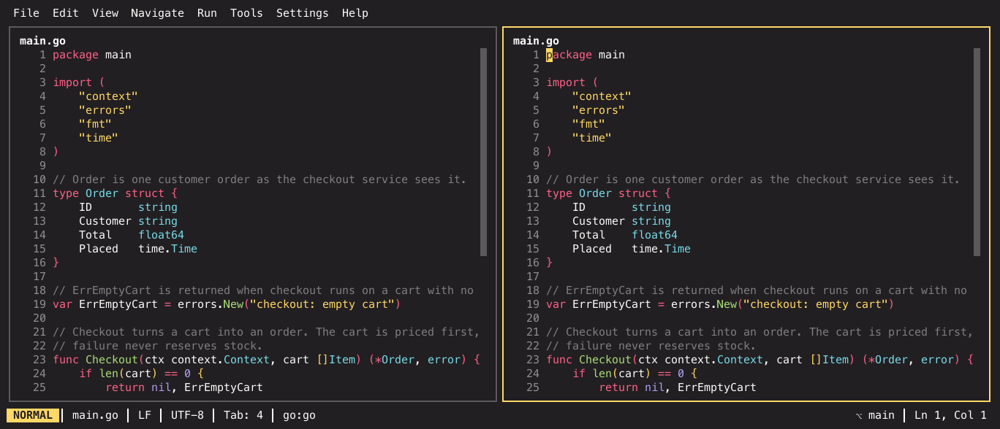
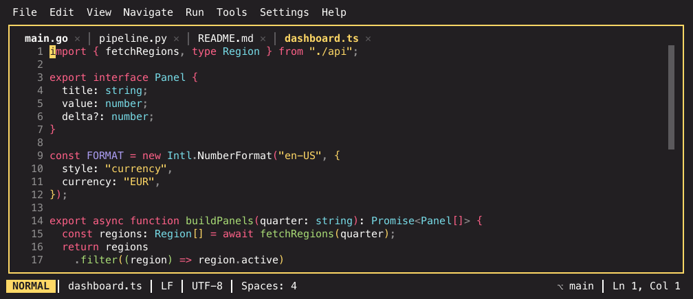

Panes, tabs and layouts¶
IKE's window is a split tree. There is no fixed sidebar-plus-editor arrangement: every region is a pane, every pane can be split, and any pane can end up anywhere.

All screenshots on this page use the monokai-pro theme.
Read that window as a tree — a vertical split whose left child is the explorer and whose right child is the editor:
graph TD
R["window (split, vertical)"] --> E["explorer pane"]
R --> M["split (horizontal)"]
M --> T["editor pane<br/>tabs: main.go, README.md"]
M --> B["terminal pane"]Nothing about that shape is fixed. The explorer can sit on the right, the terminal can be a tab inside the editor pane, and any leaf can be split again.
The pieces¶
Pane — one rectangle holding one thing: the file tree, an editor, or a tool window. Panes tile the window exactly; there is no gap between them, and the seam you see is the two panes' own borders meeting.
Split — a pane divided in two, either side by side or stacked, at a ratio you can drag. Splitting a split is how you get arbitrary arrangements.
Tab — editor panes hold an ordered list of tabs. Terminals live in tabs too, so a pane can hold a mix of files and shells.
Focus — exactly one pane has it, and its border is drawn in the accent colour. It decides which keybindings are active (the keybinding reference is grouped by context), which pane a newly opened file lands in, and what most commands act on.
These four words mean the same thing on every page of this documentation, as do the two that name what fills a pane:
| Word | What it names |
|---|---|
| Tool window | A built-in pane IKE opens for you: the explorer, Structure, Problems, the TODO index, the VCS window, the debug window |
| Tool pane | A pane running a TUI program you configured under [[tools.custom]] — lazygit, htop |
Overlays — the palette, the settings panel, the cheatsheet — are neither: see What is not a pane.
Splitting and moving¶
| Keys | What it does |
|---|---|
| Cmd+K then Left / Right / Up / Down | Split the focused pane in that direction |
| Cmd+K then Z | Maximize the focused pane, and back |
| Ctrl+Tab | Cycle pane focus (Ctrl + arrows moves directionally) |
| Cmd+Shift+F12 | Hide all tool windows |
| Shift+F12 | Restore the default layout |
Every one of those acts on the focused pane, whichever type it is. Split View Right (Cmd+Alt+Shift+Right) is the editor-specific variant: with an editor pane focused it puts the same buffer in a second pane next to the first.

With the mouse: drag a divider to resize, drag a pane's title bar to move the pane somewhere else, right-click a title bar for the pane's context menu. A drag only engages after the pointer travels a little, so a plain click on a title bar just focuses.
ctrl+tab inside tmux
tmux consumes Ctrl+Tab for its own tab switching and never forwards
it. Use the arrow variants, or rebind pane.switcher.
Tabs¶
Tabs belong to a pane, not to the window. Opening a file routes it into the focused pane's tab list, so where your focus is decides where the file lands.

| Keys | What it does |
|---|---|
| Cmd+Ctrl+Right / Cmd+Ctrl+Left | Next / previous tab |
| Alt+1 … Alt+9 | Jump to tab n |
| Ctrl+Shift+Page Up / Ctrl+Shift+Page Down | Move the current tab left / right |
| Cmd+W | Close the active tab |
| Cmd+Shift+T | Reopen the last closed tab |
The tab limit¶
editor.tabs.limit (default 5) caps the document tabs per pane,
JetBrains-style: opening a file beyond the limit closes the least recently used
tab instead of growing the bar forever. Set it to 0 to disable the cap.
Eviction never costs you anything you cannot get back. Exempt from it are the active tab, tabs with unsaved changes, scratch tabs (there is no path to reopen them from), terminal tabs, and pinned tabs. If nothing is eligible — every other tab pinned, say — the limit is simply exceeded rather than something being closed that should not be. Evicted tabs go into the reopen ring, so Cmd+Shift+T brings them back.
Pin a tab with Pin/Unpin Tab from the palette or the tab context menu. A pinned tab is exempt from eviction and survives the close-others actions.
Buffers are shared¶
The same file open in two panes is one buffer, not two copies: type in one and the other updates, and it is dirty or clean in both. Closing one tab does not discard the content the other still shows.
That is what makes a split-with-the-same-file useful — two viewports, one document, each with its own cursor and scroll position.
Layouts persist¶
The arrangement is saved per project: reopen a project and the panes, the splits and their ratios come back the way you left them.
Beyond that you can name arrangements:
- Save Window Layout… stores the current arrangement under a name. Before naming it you pick the panes the layout should pin on a map of the current arrangement — arrows or H/J/K/L move, Space or a mouse click toggles, Enter continues. Pinned panes are highlighted in the selection color; dim panes are not stored: when you later apply the layout, whatever is open in panes the layout does not pin spreads over the remaining space, keeping its current arrangement.
- Window Layouts… opens a picker to apply one.
- Set Default Window Layout… marks one as the layout new projects start from.
- Shift+F12 restores the default layout when a session has drifted.
Applying a layout never folds your open panes into tabs: editors and running terminals that have no slot in the layout keep their own panes and move into the flexible space — next to the layout's editor area when the layout pins every pane — preserving how they were arranged. Tool panes such as lazygit never absorb other terminals.
Named layouts are user-scoped, so they follow you across projects. A saved layout that no longer makes sense — a pane type that is gone, a window that shrank — degrades rather than failing; you never lose a pane to a stale layout.
What is not a pane¶
Overlays are not part of the tree and do not disturb it: the command palette, the help cheatsheet, the settings panel, the welcome tour and confirmation dialogs all float above the layout and give focus back when they close.